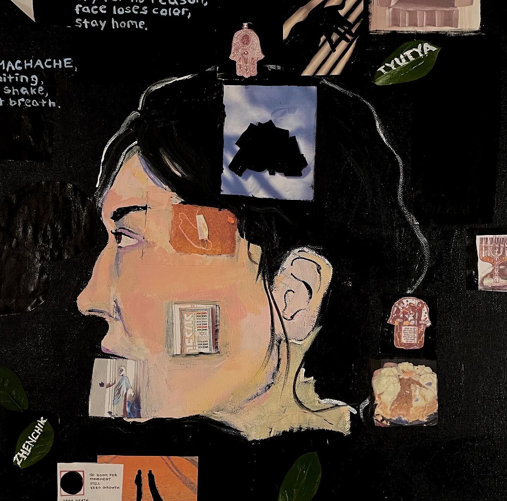

Quarantined Self Portrait
Tools: acrylic paint and photo collage
The assignment for this project was to create a composite piece that is made up of my answers to the teaching questions of Paul Thek, an American sculptor, painter and installation artist. My choice to create a self portrait was based on my belief that the answers illustrated a reflection of myself and how my upbringing, environment, and experiences up to that point shaped my thinking. Not to mention, the isolation I felt during this time as it was around the one-year mark since the pandemic really took center stage on our lives.
Full image:

Cropped close-up:
